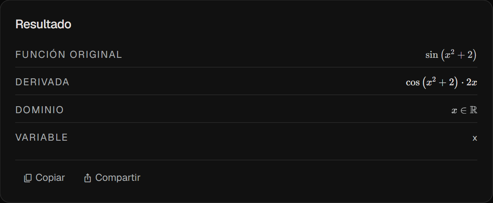
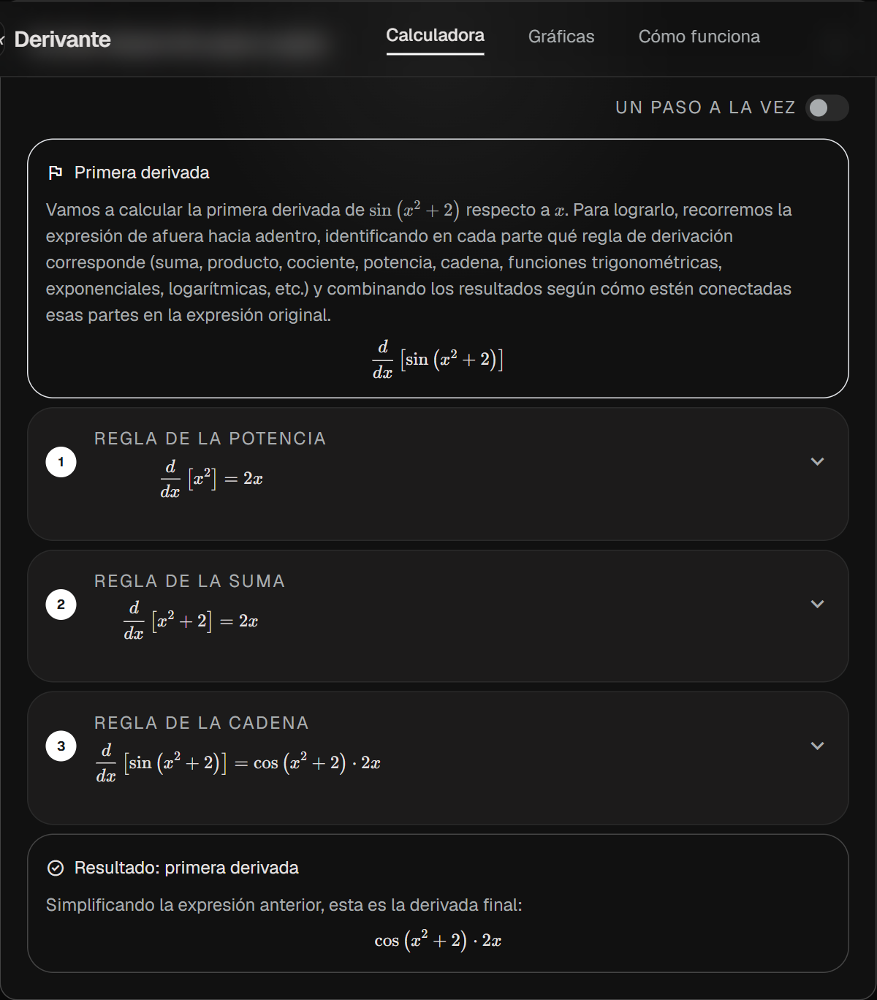
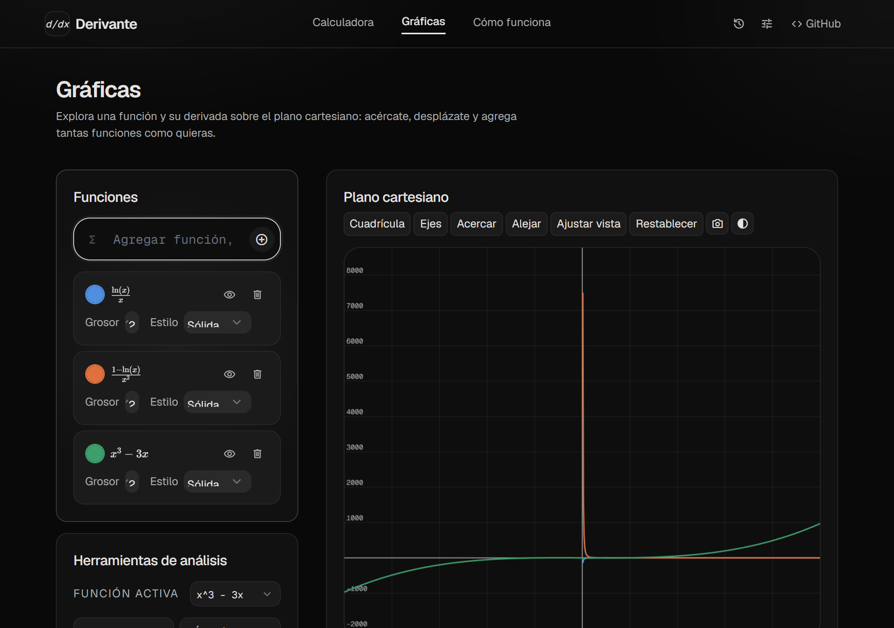

Cómo funciona la calculadora de derivadas Derivante
Derivante es una calculadora de derivadas online y gratuita que no solo entrega el resultado exacto: te explica, paso a paso y con tu propia función, cómo se llega a él. Sin instalar nada, sin registrarte, directamente en tu navegador.
¿Qué es una calculadora de derivadas y por qué usar Derivante?
Una calculadora de derivadas es una herramienta que aplica las reglas del cálculo diferencial para encontrar automáticamente la derivada de una función matemática. La mayoría solo muestra el resultado final. Derivante es distinta: construye la derivación paso a paso como lo haría un profesor, explicando qué regla se aplica en cada momento y por qué, siempre con las expresiones concretas de tu función y nunca con letras abstractas difíciles de traducir a tu caso real.
El resultado: entiendes el procedimiento, no solo lo copias.
Cómo resolver una derivada paso a paso en Derivante
Tres pasos, sin fricción, desde escribir tu función hasta entender su derivada.
Escribe tu función
Por teclado, con el teclado matemático en pantalla, o dictándola por voz. Elige la variable y el orden de derivación.
Pulsa Calcular
Derivante analiza tu expresión, aplica las reglas de derivación correspondientes y simplifica el resultado al instante.
Sigue el desarrollo
Revisa el resultado en notación matemática, el desarrollo paso a paso completo, y la gráfica de la función y su derivada.

Funciones principales de la calculadora de derivadas
Todo lo que necesitas para resolver, entender y visualizar una derivada, en un solo lugar.
Derivación automática e instantánea
Escribe la función y obtén su derivada exacta al momento, sin cálculos manuales ni riesgo de errores algebraicos.
Desarrollo paso a paso
Cada regla aplicada se explica en lenguaje simple, con tu función real. Navega el desarrollo completo o de a un paso a la vez.
Notación matemática en LaTeX
El resultado y cada paso se renderizan con símbolos matemáticos reales, igual que en un libro de cálculo, nunca como código plano.
Graficación interactiva
Visualiza la función y su derivada sobre un plano cartesiano con zoom y desplazamiento, o analiza tangentes, áreas, extremos y asíntotas.
Derivadas de orden superior
Calcula segunda, tercera y cuarta derivada, cada una con su propio desarrollo completo e independiente, sin pasos omitidos.
Selección de variable de derivación
Deriva respecto a x, y, z o t, e incluso resuelve derivación implícita entre dos variables relacionadas.
Historial de operaciones
Vuelve a cualquier cálculo anterior de tu sesión de estudio con un clic, sin tener que escribir la función de nuevo.
Compatible con funciones comunes
Trigonométricas, hiperbólicas, exponenciales, logarítmicas, raíces y valor absoluto, todas soportadas de forma nativa.

Ventajas para estudiantes y profesores
Una misma herramienta, dos formas de aprovecharla.
Para estudiantes
- Comprende el por qué de cada regla, no solo el resultado.
- Verifica tareas y ejercicios resueltos a mano antes de entregarlos.
- Repasa para exámenes navegando el desarrollo un paso a la vez.
- Visualiza la función y su derivada para reforzar la intuición geométrica.
Para profesores
- Genera ejemplos resueltos y verificados para clase en segundos.
- Muestra en pantalla un desarrollo claro, ordenado y con notación correcta.
- Ilustra la definición de la derivada por límites cuando resulta pedagógicamente útil.
- Sin licencias ni instalación: funciona en cualquier equipo del salón.
Del resultado simbólico a la gráfica interactiva
Cada derivada calculada puede explorarse visualmente en la página de gráficas interactivas, que carga automáticamente tu última función sin que tengas que volver a escribirla. Acerca, aleja y desplaza el plano cartesiano, o activa herramientas de análisis como recta tangente, área bajo la curva, máximos y mínimos, intersecciones, límites y asíntotas.

Preguntas frecuentes sobre el cálculo de derivadas
¿Qué es una derivada y para qué sirve calcularla?
La derivada mide la razón de cambio instantánea de una función: qué tan rápido crece o decrece en cada punto. Se usa para hallar velocidades, pendientes de rectas tangentes, máximos y mínimos, y para modelar fenómenos en física, economía e ingeniería.
¿Cómo calculo una derivada paso a paso online?
Escribe tu función en el campo de la calculadora, elige la variable y el orden de derivación, y pulsa Calcular. Derivante te muestra el resultado exacto junto con cada regla aplicada, explicada en lenguaje sencillo y con tu propia función, no con letras abstractas.
¿Derivante calcula derivadas de segundo, tercer y cuarto orden?
Sí. Puedes elegir el orden de derivación desde el selector de la calculadora, y cada orden se explica con su propio desarrollo paso a paso completo, sin omitir procedimientos intermedios.
¿Puedo derivar respecto a una variable distinta de x?
Sí. Derivante permite elegir x, y, z o t como variable de derivación, e incluso soporta derivación implícita cuando la ecuación relaciona dos variables entre sí.
¿La calculadora explica qué regla de derivación aplica en cada paso?
Sí. Cada paso indica el nombre de la regla usada (suma, producto, cociente, potencia, cadena, entre otras) y justifica por qué corresponde aplicarla en ese punto concreto de la función.
¿Es gratis usar Derivante?
Sí, la calculadora de derivadas es completamente gratuita y no requiere registro ni instalación: funciona directamente desde tu navegador.
¿Puedo ver la gráfica de la función y su derivada?
Sí. Cada resultado incluye una vista rápida en un minigráfico, y desde la página de gráficas interactivas puedes explorar la función y su derivada con zoom, desplazamiento y herramientas adicionales de análisis.
¿Listo para resolver tu derivada?
Escribe tu función, elige el orden de derivación y obtén el resultado con su desarrollo completo en segundos.